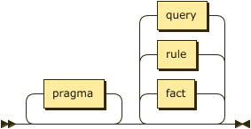
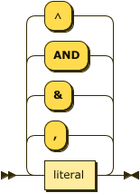
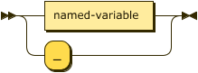
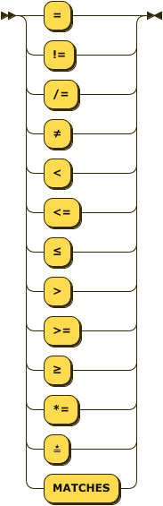
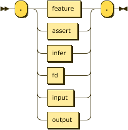
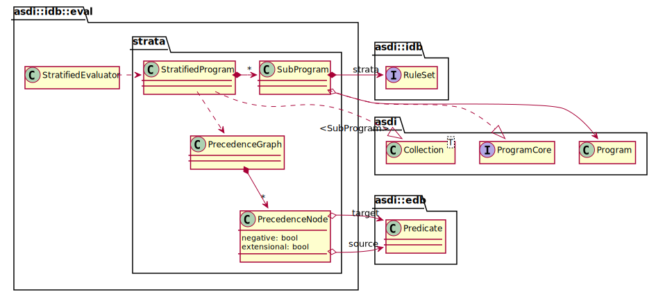
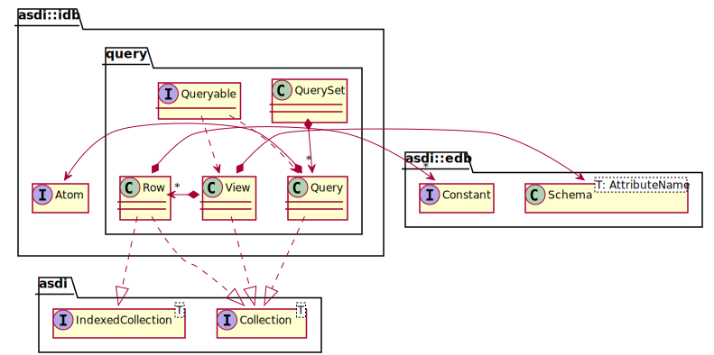
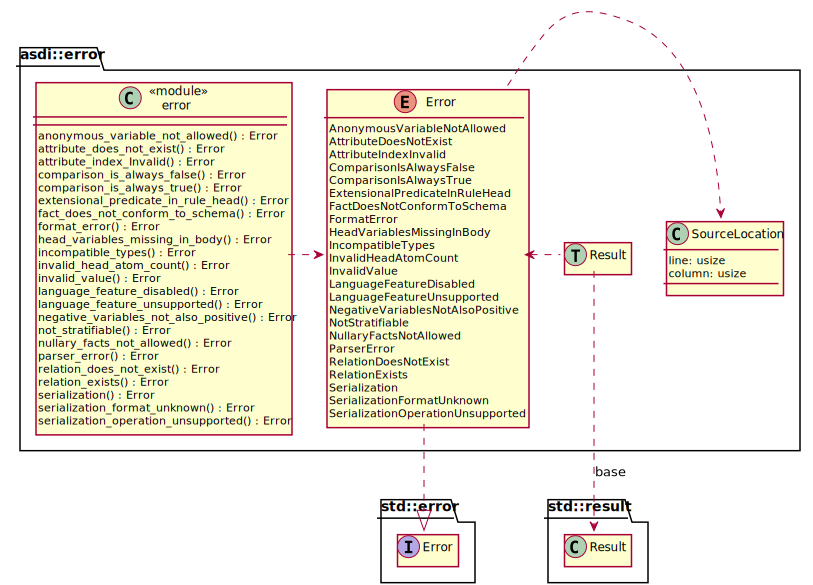
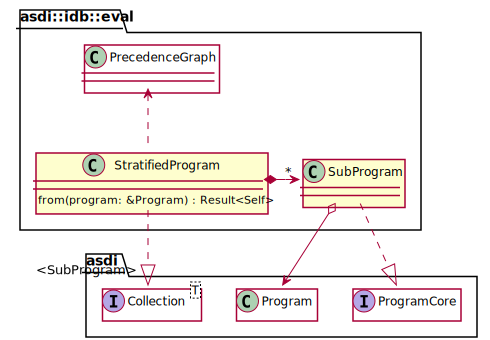

Introduction
Another Simplistic Datalog Implementation (ASDI), in Rust.
Datalog is a logic programming language and a subset of the earlier Prolog1. The language is interesting as it can be used as a data query language akin to SQL with some important additional capabilities such as recursive queries. It is also expressive enough to allow for it’s use as an entailment mechanism for ontology languages such as the Web Ontology Language (OWL) and the Semantic Web.
This package provides an in-memory model to represent Datalog programs, a parser for a textual representation, relation input/output implementations and some implementations of common inference techniques.
Chapter 1, provides a brief simple description of Datalog by example.
Chapter 2 will provide a more detailed overview of Datalog itself from both an abstract point of view, and a tour of the concrete syntax used as the textual representation.
Chapter 3 will provide a guide to the crate API in a more scenario-based fashion and relies on the rust doc to provide the definitive reference.
Chapter 4 will cover the major extension points in the crate and identify how to contribute new implementations for specific extension traits.
Brief Datalog Example
We will consider the following syllogism from Mill1851, vol. 1, chap. 2:
All men are mortal.
Socrates is a man.
Therefore, Socrates is mortal.
This can be represented in the following Datalog textual program.
human("Socrates").
mortal(X) <- human(X).
?- mortal("Socrates").
The execution of this program will start with the goal query “is Socrates mortal?” and in doing so will evaluate the necessary rule and derive the relation mortal. The result is a boolean value denoting whether the goal is satisfied.
+------------+
| _: boolean |
+============+
| true |
+------------+
However, if we were to change the final query to replace the constant with a variable, as follows.
?- mortal(X).
The program will select all matching (in this case all) facts from the mortal relation.
+------------+
| X: string |
+============+
| "Socrates" |
+------------+
The following is the same example constructed via the ASDI library.
#![allow(unused)] fn main() { use asdi::{NameReferenceSet, Program}; use asdi::edb::{Attribute, Predicate}; use asdi::idb::{Atom, Term, Variable}; use std::str::FromStr; let mut syllogism = Program::default(); let predicates = syllogism.predicates(); let p_human = predicates.fetch("human").unwrap(); let p_mortal = predicates.fetch("mortal").unwrap(); let human = syllogism .add_new_extensional_relation(p_human.clone(), vec![Attribute::string()]) .unwrap(); human.add_as_fact(["Socrates".into()]).unwrap(); let variables = syllogism.variables(); let var_x: Term = variables.fetch("X").unwrap().into(); syllogism .add_new_pure_rule( p_mortal.clone(), [var_x.clone()], [Atom::new(p_human, [var_x]).into()], ) .unwrap(); syllogism .add_new_query(p_mortal, ["Socrates".into()]) .unwrap(); }
The textual form of Datalog also has a set of pragmas, or directives, which allow us to specify details of the relations
in our program. For example, in the text below we use the assert pragma to identify an EDB relation named “human” with
a single column of type string. We then go on to use the infer pragma to identify an IDB relation named “mortal”,
and we declare that it’s schema is the same as the EDB relation “human”.
.assert human(string).
.infer mortal from human.
human("Socrates").
mortal(X) <- human(X).
?- mortal("Socrates").
License
MIT License
Copyright (c) 2021 Simon Johnston
Permission is hereby granted, free of charge, to any person obtaining a copy
of this software and associated documentation files (the "Software"), to deal
in the Software without restriction, including without limitation the rights
to use, copy, modify, merge, publish, distribute, sublicense, and/or sell
copies of the Software, and to permit persons to whom the Software is
furnished to do so, subject to the following conditions:
The above copyright notice and this permission notice shall be included in all
copies or substantial portions of the Software.
THE SOFTWARE IS PROVIDED "AS IS", WITHOUT WARRANTY OF ANY KIND, EXPRESS OR
IMPLIED, INCLUDING BUT NOT LIMITED TO THE WARRANTIES OF MERCHANTABILITY,
FITNESS FOR A PARTICULAR PURPOSE AND NONINFRINGEMENT. IN NO EVENT SHALL THE
AUTHORS OR COPYRIGHT HOLDERS BE LIABLE FOR ANY CLAIM, DAMAGES OR OTHER
LIABILITY, WHETHER IN AN ACTION OF CONTRACT, TORT OR OTHERWISE, ARISING FROM,
OUT OF OR IN CONNECTION WITH THE SOFTWARE OR THE USE OR OTHER DEALINGS IN THE
SOFTWARE.
Chapter 1 of CeGoTa90 provides a good overview of the drawbacks of Prolog and the advantages of Datalog for certain tasks.
Datalog
Datalog is a logic programming language, but is also an expressive query language for deductive databases. As such it can be studied, and described, either as a programming language, as a language for expressing mathematical logic, or as a query language.
When considered from a mathematical point of view it is common to start from a basis in predicate logic or Horn clauses and demonstrate how these relate to the rules in a Datalog program. The following section takes a more direct approach leaving the relationship with other logic forms for a brief appendix.
When considered from a database or query point of view it is common to start from a basis in relational algebra and demonstrate the expressive equivalence between it and Datalog. In considering Datalog as a query language it is noted that every expression in the basic relational algebra can be expressed as a Datalog query. A mapping from relational algebra to Datalog is also included as an appendix.
Datalog Languages
When we talk specifically about the Datalog language it is common to represent it in a roman serif face as $\small\text{Datalog}$. This allows the distinction of talking in general about Datalog in the abstract vs. the actual semantics of the language $\small\text{Datalog}$.
This core $\small\text{Datalog}$ language has many documented extensions that provide additional flexibility, conciseness, or expressiveness. These languages, sub-languages, extensions, or dialects are usually labeled by adding a superscript symbol that identifies the specific extension. For example, $\small\text{Datalog}^{\lnot}$ is the language extended with negation of literals, $\small\text{Datalog}^{\Gamma}$ is the language extended with type checking on attributes, and $\small\text{Datalog}^{\lnot,\theta}$ is the language extended with negation of literals and arithmetic literals. The order of superscript symbols is irrelevant.
When referring to the specifics of the language we will use the common format $\small\text{Datalog}$ with superscripts as necessary to identify specific language extensions being used.
Abstract Syntax
This section describes the structure of $\small\text{Datalog}$ languages without reference to any concrete syntax or serialized representation. The most common concrete syntax is derived from Prolog and will be described in detail in the following section. In this section, text in bold indicates a key concept in the language while text in italics indicates a forward reference to such a concept.
Programs
A Datalog Program $\small P$ is a tuple comprising the Extensional database, EDB, or $\small D_{E}$, the Intensional database, IDB, or $\small D_{I}$, and a set of queries $\small Q$.
$$\tag{0}\small P=( D_E, D_I, Q )$$
The extensional database in turn is a set of relations each of which is a set of facts (ground atoms). The intensional database is a set of rules that derive additional facts into intensional relations via entailment.
A program has the following properties.
- $\small program(x)$ a boolean predicate which returns
trueIFF $\small x$ is a program. - $\small extensional(P) \equiv D_E$ returns the set of relations comprising the extensional database.
- $\small intensional(P) \equiv \lbrace r | r \in D_I \land relation(r) \rbrace$ returns the set of relations comprising the intensional database, IFF entailment has occurred.
- $\small rules(P) \equiv \lbrace r | r \in D_I \land rule(r) \rbrace$ returns the set of rules associated with the intensional database.
- $\small positive(r)$ a boolean predicate which returns true IFF all intensional rules are positive: $$\tag{v}\small positive(p) \coloneqq (\forall{r}\in rules(p); positive(r))$$
Rules
Rules $\small R$ are built from a language $\small \mathcal{L}=( \mathcal{C},\mathcal{P},\mathcal{V})$ that contains the
- $\small \mathcal{C}$ — the finite sets of symbols for all constant values; e.g.
hello,"hi"123, - $\small \mathcal{P}$ — the finite set of alphanumeric character strings that begin with a
lowercase character; e.g.
human,size,a, - $\small \mathcal{V}$ — the finite set of alphanumeric character strings that begin with an
uppercase character; e.g.
X,A,Var.
While it would appear that the values from $\small \mathcal{C}$ and $\small \mathcal{P}$ would
intersect, these values must remain distinct. For example, the value human is a valid predicate and
string constant, but they have distinct types in ASDI that ensure they have distinct identities.
Each rule $\small r \in R$ has the form:
$$\tag{i}\small A_1, \ldots, A_m \leftarrow L_1, \ldots, L_n$$
as well as the following properties:
- $\small rule(x)$ a boolean predicate which returns
trueIFF $\small x$ is a rule. - $\small head(r)$ (the consequence), returns the set of atom values $\small A_1, \ldots, A_m$ where $\small m \in \mathbb{N}$,
- $\small body(r)$ (the antecedence), returns the set of literal values $\small L_1, \ldots, L_n$ where $\small n \in \mathbb{N}$,
- $\small distinguished(r)$ returns the set of terms in the head of a rule, $$\tag{ii}\small distinguished(r) \coloneqq \lbrace t | t \in \bigcup\lbrace terms(a) | a \in head(r) \rbrace \rbrace$$
- $\small non\text{-}distinguished(r)$ returns the set of terms in the body that of a rule that are not in the head, $$\tag{iii}\small non\text{-}distinguished(r) \coloneqq \lbrace t | t \in ( \bigcup\lbrace terms(a) | a \in body(r) \rbrace - distinguished(r) \rbrace)\rbrace$$
- $\small ground(r)$ a boolean predicate which returns
trueIFF its head and its body are both ground: $$\tag{iv}\small ground(r) \coloneqq (\forall{a}\in head(r); ground(a)) \land (\forall{l}\in body(r); ground(l))$$ - $\small positive(r)$ a boolean predicate which returns
trueIFF all body literals are positive: $$\tag{v}\small positive(r) \coloneqq (\forall{l}\in body(r); positive(l))$$
A pure rule is one where there is only a single atom in the head; if the body is true, the head is true. A constraint rule, or contradiction, does not allow any consequence to be determined from evaluation of its body. A disjunctive rule is one where there is more than one atom, and any one may be true if the body is true. The language $\small\text{Datalog}^{\lor}$ allows for inclusive disjunction, and while a language, $\small\text{Datalog}^{\oplus}$, exists for exclusive disjunction it is not implemented here.
The property $\small form(r)$ returns the form of the rule, based on the cardinality of the rule’s head as follows:
$$\tag{vi}\small form(r) \coloneqq \begin{cases} pure, &\text{if } |head(r)| = 1 \\ constraint, &\text{if } |head(r)| = 0 \land \text{Datalog}^{\lnot} \\ disjunctive, &\text{if } |head(r)| > 1 \land \text{Datalog}^{\lor} \end{cases}$$
Note that this notation is similar to that of a sequent. Taking our definition of a rule, $\small A_1, \ldots, A_m \leftarrow L_1, \ldots, L_n$, and swap the order of antecedence and consequence we get $\small L_1, \ldots, L_m \vdash A_1, \ldots, A_n$. A pure rule is termed a simple conditional assertion, a constraint rule is termed an unconditional assertion, and a disjunctive rule is termed a sequent (or simply conditional assertion).
Alternatively, some literature defines a rule in the following form:
$$\tag{ia}\small C_1 | C_2 | \ldots | C_n \leftarrow A_1, \ldots, A_m, \lnot B_1, \ldots, \lnot B_k$$
Where this form shows the expanded head structure according to $\small\text{Datalog}^{\lor}$, and the set of negated literals according to $\small\text{Datalog}^{\lnot}$.
Datalog does not allow rules to infer new values for relations that exist in the extensional database. This may be expressed as follows:
$$\tag{xvii}\small \mathcal{P}_E \cap \mathcal{P}_I = \empty$$
The same restriction is not required for constants in $\small \mathcal{C}_P$ or variables in $\small \mathcal{V}_P$ which should be shared.
Terms
Terms, mentioned above, may be constant values or variables such that $\small\mathcal{T}=\mathcal{C}\cup\mathcal{V}\cup\bar{t}$ where $\small\bar{t}$ represents an anonymous variable.
Terms have the following properties:
- $\small term(x)$ a boolean predicate which returns
trueIFF $\small x$ is a term. - $\small constant(t)$ a boolean predicate which returns
trueIFF the term argument is a constant value. - $\small variable(t)$ a boolean predicate which returns
trueIFF the term argument is a variable. - $\small anonymous(t)$ a boolean predicate which returns
trueIFF the term argument is the anonymous variable, $\small\bar{t}$.
With the definition of rules so far it is possible to write rules that generate an an infinite number of results. To avoid such problems Datalog rules are required to satisfy the following Safety conditions:
- Every variable that appears in the head of a clause also appears in a positive relational literal (atom) in the body of the clause. $$\tag{vii}\small \begin{alignat*}{2} safe\text{-}head(r) &\coloneqq &&\lbrace t | t \in distinguished(r), t \in \mathcal{V} \rbrace \\ &- &&\lbrace t | t \in \bigcup\lbrace terms(a) | a \in body(r), atom(a), positive(a) \rbrace, t \in \mathcal{V} \rbrace \\ &= &&\empty \end{alignat*}$$
- Every variable appearing in a negative literal in the body of a clause also appears in some positive relational literal in the body of the clause. $$\tag{viii}\small \begin{alignat*}{2} safe\text{-}negatives(r) &\coloneqq &&\lbrace t | t \in \bigcup\lbrace terms(a) | a \in body(r), \lnot positive(a) \rbrace, t \in \mathcal{V} \rbrace \\ &- &&\lbrace t | t \in \bigcup\lbrace terms(a) | a \in body(r), atom(a), positive(a) \rbrace, t \in \mathcal{V} \rbrace \\ &= &&\empty \end{alignat*}$$
Atoms
Atoms are comprised of a label, $\small p \in \mathcal{P}$, and a tuple of terms. A set of atoms form a Relation if each conforms to the schema of the relation. The form of an individual atom is as follows:
$$\tag{ix}\small p(t_1, \ldots, t_k)$$
as well as the following properties:
- $\small atom(x)$ a boolean predicate which returns
trueIFF $\small x$ is a atom. - $\small label(a)$ returns the predicate $\small p$,
- $\small terms(a)$ returns the tuple of term values $\small t_1, \ldots, t_k$; where $\small t \in \mathcal{T}$ and $\small k \in \mathbb{N}^{+}$,
- $\small arity(a)$ returns the cardinality of the relation identified by the predicate; $\small arity(a) \equiv |terms(a)| \equiv k$,
- in $\small\text{Datalog}^{\Gamma}$:
- there exists a type environment $\small \Gamma$ consisting of one or more types $\small \tau$,
- each term $\small t_i$ has a corresponding type $\small \tau_i$ where $\small \tau \in \Gamma$,
- $\small type(t)$ returns the type $\small \tau$ for that term,
- $\small types(a)$ returns a tuple such that; $\small (i \in {1, \ldots, arity(a)} | type(t_i))$,
- $\small ground(a)$ a boolean predicate which returns
trueIFF its terms are all constants: $$\tag{x}\small ground(a) \coloneqq (\forall{t}\in terms(a); t \in \mathcal{C})$$
Relations
Every relation $\small r$ has a schema that describes a set of attributes $\small \lbrace \alpha_1, \ldots, \alpha_j \rbrace$, and each attribute may be labeled, and may in $\small\text{Datalog}^{\Gamma}$ also have a type. In general, we refer to attributes by index, a value in $\small 1, \cdots, j$.
Relations have the following properties:
- $\small relation(x)$ a boolean predicate which returns
trueIFF $\small x$ is a relation. - $\small label(r)$ returns the predicate $\small p$,
- $\small schema(r)$ returns the set of attributes $\small \lbrace \alpha_1, \ldots, \alpha_j \rbrace$; where $\small k \in \mathbb{N}^{+}$,
- $\small arity(r)$ returns the number of attributes in the relation’s schema, and therefore all atoms within the relation; $\small arity(r) \equiv |schema(a)| \equiv j$.
- $\small atoms(r)$ returns the set of atoms that comprise this relation.
You will sometimes find the term sort used instead of schema. This term is used with meaning derived from Model Theory (see also Wilfred22) as a partition of objects into similarly structured forms. Sort is used in this way extensively in AbHuVi94.
Attributes have the following properties:
- $\small index(\alpha)$ returns the index of this attribute in the schema, where $\small index \in \lbrace 1, \cdots, j \rbrace$.
- $\small label(\alpha)$ returns either the predicate label of the attribute, or $\small\bot$.
- in $\small\text{Datalog}^{\Gamma}$:
- $\small type(\alpha)$ returns a type $\small \tau$ for the attribute, where $\small \tau \in \Gamma$, or $\small\bot$.
The following defines a binary function that determines whether an atom $\small a$ conforms to the schema of a relationship $\small r$.
$$\tag{xi}\small \begin{alignat*}{2} conforms(a, r) &\coloneqq &&ground(a) \\ &\land &&label(a) = label(r) \\ &\land &&arity(a) = arity(r) \\ &\land &&\forall{i} \in [1, arity(r)] \medspace conforms( a_{t_i}, r_{\alpha_i} ) \end{alignat*} $$ $$\tag{xii}\small conforms(t, \alpha) \coloneqq label(t) = label(\alpha) \land \tau_{t} = \tau_{\alpha} $$
Note that in relational algebra it is more common to use the term domain $\small D$ to denote a possibly infinite set of values. Each attribute on a relation has a domain $\small D_i$ such that each ground term is a value $\small d_i$ and the equivalent of $\small \tau_i \in \Gamma$ becomes $\small d_i \in D_i$.
To visualize a set of facts in a relational form we take may create a table $p$, where each column, or attribute, corresponds to a term index $1 \ldots k$. If the facts are typed then each column takes on the corresponding $\tau$ type. Finally each row in the table is populated with the tuple of term values.
| $\small col_1: \tau_1$ | $\small \ldots$ | $\small col_k: \tau_k$ | |
|---|---|---|---|
| $\small row_1$ | $\small t_{1_1}$ | $\small \ldots$ | $\small t_{1_k}$ |
| $\small \ldots$ | $\small \ldots$ | $\small \ldots$ | $\small \ldots$ |
| $\small row_y$ | $\small t_{y_1}$ | $\small \ldots$ | $\small t_{y_k}$ |
Literals
Literals within the body of a rule, represent sub-goals that are the required to be true for the rule’s head to be considered true.
- A literal may be an atom (termed a relational literal) or, in $\small\text{Datalog}^{\theta}$, a conditional expression (termed an arithmetic literal),
- an arithmetic literal has the form $\small \langle t_{lhs} \theta t_{rhs} \rangle$, where
- $\small \theta \in \lbrace =, \neq, <, \leq, >, \geq \rbrace$,
- in $\small\text{Datalog}^{\Gamma}$ both $\small t_{lhs}$ and $\small t_{rhs}$ terms have corresponding types $\small \tau_{lhs}$ and $\small \tau_{rhs}$,
- the types $\small \tau_{lhs}$ and $\small \tau_{rhs}$ must be compatible, for some system-dependent definition of the property $\small compatible(\tau_{lhs}, \tau_{rhs}, \theta)$,
- in $\small\text{Datalog}^{\lnot}$ a literal may be negated, appearing as $\small \lnot l$,
- and has the following properties:
- $\small literal(x)$ a boolean predicate which returns
trueIFF $\small x$ is a literal. - $\small relational(l)$ a boolean predicate which returns
trueIFF the literal argument is a relational literal. - $\small arithmetic(l)$ a boolean predicate which returns
trueIFF the literal argument is a arithmetic literal. - $\small terms(l)$ returns the set of terms in a literal, $$\tag{xiii}\small terms(l) \coloneqq \begin{cases} terms(l), &\text{if } relational(l) \\ \lbrace t_{lhs}, t_{rhs} \rbrace, &\text{if } arithmetic(l) \land \text{Datalog}^{\theta} \end{cases}$$
- $\small ground(l)$ a boolean predicate which returns
trueIFF its terms are all constants $\small (\forall{t}\in terms(l); t \in \mathcal{C})$, - $\small positive(l)$ in $\small\text{Datalog}^{\lnot}$ returns
falseif negated, otherwise it will always returntrue.
- $\small literal(x)$ a boolean predicate which returns
| $\small relational(l)$ | $\small arithmetic(l)$ | $\small terms(l)$ | $\small ground(l)$ | $\small positive(l)$ | |
|---|---|---|---|---|---|
| $\small p(X, Y)$ | true | false | $\small \lbrace X, Y \rbrace$ | false | true |
| $\small p(X, 1)$ | true | false | $\small \lbrace X, 1 \rbrace$ | false | true |
| $\small p(2, 1)$ | true | false | $\small \lbrace 2, 1 \rbrace$ | true | true |
| $\small X = 1$ | false | true | $\small \lbrace X, 1 \rbrace$ | false | true |
| $\small \lnot p(2, 1)$ | true | false | $\small \lbrace 2, 1 \rbrace$ | true | false |
| $\small \lnot X = 1$ | false | true | $\small \lbrace X, 1 \rbrace$ | false | false † |
† note that while $\small \lnot X = 1$ is a negative literal, the corresponding literal $\small X \neq 1$ is not.
It is sometimes useful to consider the values ⊤ (tautology) and ⊥ (absurdity) as pseudo-literals given that certain
expressions can be reduced to them. For example, the arithmetic literal $\small 1=1$ must always be true and can
therefore be reduced to ⊤ (or discarded entirely); similarly the arithmetic literal $\small 1=2$ must always be
false and can therefore be reduced to ⊥. Any rule where any literal reduces to ⊥ can itself never be true.
Any rule that only comprises literals that reduce to ⊤ must always be true.
Facts
Any ground rule where $\small m=1$ and where $\small n=0$ is termed a Fact as it is true by nature of having an empty body, or alternatively we may consider the body be comprised of the truth value $\small\top$.
Facts have the following properties:
- $\small fact(x)$ a boolean predicate which returns
trueIFF $\small x$ is a fact. $$\tag{xiv}\small fact(r) \coloneqq (ground(r) \land form(r)=pure \land body(r)=\empty)$$
Queries
An atom may be also used as a Goal or Query clause in that its constant and variable terms may be used to match facts from the known facts or those that may be inferred from the set of rules introduced. A ground goal is simply determining that any fact exists that matches all the constant values provided and will return true or false. In the case that one or more variables exist a set of facts will be returned that match the expressed constants and provide the corresponding values for the variables.
The set of relations accessible to queries in the program is the union of relations in the extensional and intensional databases.
$$\tag{xvi}\small \mathcal{P}_P = \mathcal{P}_E \cup \mathcal{P}_I$$
It should be noted that the same exists for constants and variables; $\small \mathcal{C}_P = \mathcal{C}_E \cup \mathcal{C}_I$ and $\small \mathcal{V}_P = \mathcal{V}_E \cup \mathcal{V}_I$.
Queries have the following properties:
- $\small query(x)$ a boolean predicate which returns
trueIFF $\small x$ is a query.
Concrete Syntax
The definitions below uses both Extended Backus-Naur Form (EBNF)1 and syntax diagrams2 to focus on the concrete syntax as expressed in the text representation. The EBNF definition is somewhat simplified from the grammar used in the ASDI parser although any deviations do not significantly affect the meaning of the language.
Programs
A program consists of a set of facts that comprise the extensional database, a list of rules that comprise the intensional database, and possibly a set of queries to interrogate the result of any reasoning performed over the program.

program ::= pragma* ( fact | rule | query )* ;
A program consists of a single file containing facts, rules, and queries as well as any additional files referenced via pragmas.
Facts
Facts must be expressed in the form of ground atoms and so they have a specific rule rather
than a constrained form of the atom rule.

fact ::= predicate ( "(" constant ( "," constant )* ")" )? "." ;
A predicate is the identifier shared by a fact and relation.
predicate
::= LC_ALPHA ( ALPHA | DIGIT | "_" )* ;
Example – the following demonstrates a simple fact denoting that the constant brooke representing some
individual is the parent of some individual represented by the constant "Xerces".
parent("Xerces", brooke).
Constant Values
Constants are supported in three types, String, Numbers, and Boolean. Whereas some definitions of
Datalog introduce an additional Identifier type, ASDI treats these as short strings that can
safely be expressed without quotes; therefore, the values xerces and "xerces" are equivalent.

constant
::= string | number | boolean ;
Strings
Strings are described in both the identifier and quoted form in the string rule.
string ::= predicate ( ":" ALPHA ( ALPHA | DIGIT | "_" * )? )
| DQUOTE [^\u{22}]* DQUOTE ;
Numbers
Numeric values in ASDI take one of three forms, integers, decimal values, and floating point values.
Currently, decimal types are not implemented.

number ::= float | decimal | integer
Integer values in ASDI are signed, 64-bit values (i64).

integer ::= ( "+" | "-" )? DIGIT+
Decimal values in ASDI are … TBD.

decimal ::= integer "." DIGIT+
Floating point values in ASDI are 65-bit IEEE floats (f64).

float ::= decimal ( "e" | "E" ) integer
Booleans
Boolean values may also be represented using ⊤ (down tack \u{22a4}) for true, and ⊥ (up tack
\u{22a5}) for false where this may improve readability.

boolean ::= ( "true" | "⊤" ) | ( "false" | "⊥" ) ;
Rules
As facts are syntactically distinct from rules in the text representation there is no need for empty
bodies – all rules must have at least one literal. Material implication may be written using
the Unicode character ⟵ (long leftwards arrow\u{27f5}).

rule ::= ( head | "⊥" )? ( ":-" | "<-" | "⟵" ) body "." ;
The head of a rule is a disjunction of atoms, or in the case of a constraint the head may is
optional or replaced by the value "⊥".

head ::= ( atom ( ( ";" | "|" | "OR" | "∨" ) atom )* ) ;
The body of a rule is comprised of one, or more, literals.

body ::= literal ( ( "," | "&" | "AND" | "∧" ) literal )* ;
Example – the following sets of rules are equivalent.
ancestor(X, Y) :- parent(X, Y).
ancestor(X, Y) <- parent(X, Y).
ancestor(X, Y) ⟵ parent(X, Y).
movie_star(X) :- star(X) , movie_cast_member(X, _, _).
movie_star(X) :- star(X) & movie_cast_member(X, _, _).
movie_star(X) :- star(X) AND movie_cast_member(X, _, _).
movie_star(X) :- star(X) ∧ movie_cast_member(X, _, _).
Example – as described in the abstract syntax it is an error to use an extensional relation in the head of a rule. The following will generate an error:
parent("Xerces", brooke).
parent(X,Y) :- father(X,Y).
The language feature disjunction corresponds to the language $\small\text{Datalog}^{\lor}$ and
allows multiple atoms to appear in the rule’s head with the semantics that these are choices. This
syntax will not be accepted unless the feature is enabled.
Example – the following describes the rule that if X is a parent then X is either a father or mother.
.feature(disjunction).
father(X) ; mother(X) :- parent(X).
father(X) | mother(X) :- parent(X).
father(X) OR mother(X) :- parent(X).
father(X) ⋁ mother(X) :- parent(X).
As the use of disjunction in this position in the head is inclusive it is considered that any rule as above can be transformed into the following standard form. Clearly, in this case this is not the expected semantics which would require an exclusive disjunction, the language $\small\text{Datalog}^{\oplus}$. Because the semantics may cause such confusion ASDI does not do this transformation by default.
father(X) :- parent(X).
mother(X) :- parent(X).
The language feature constraints corresponds to the language $\small\text{Datalog}^{\Leftarrow}$ and
allows the specification of rules with no head. In this case the material implication symbol is
required, the falsum value is optional for readability, therefore the following rules are
equivalent.
.feature(constraints).
:- alive(X) AND dead(X).
⊥ ⟵ alive(X) ∧ dead(X).
Safety
ASDI will disallow the addition of rules that are unsafe according to the abstract syntax. The following are examples of unsafe rules:
a(X) :- b(Y).— becauseXappears as a distinguished variable but does not appear in a positive relational literal, errorHeadVariablesMissingInBody.a(X) :- b(Y), NOT b(X).— becauseXappears in a negated literal but does not appear in a positive relational literal, errorNegativeVariablesNotAlsoPositive.a(X) :- b(Y), X < Y.— BecauseXappears in an arithmetic literal but does not appear in a positive relational literal, errorArithmeticVariablesNotAlsoPositive.
Atoms
The text representation of an atom is a relatively simple translation from the abstract syntax above.

atom ::= predicate "(" term ( "," term )* ")" ;

term ::= variable | constant ;
Note that we explicitly separate variables into named and anonymous forms here.

variable
::= named-variable | anon-variable ;
named-variable
::= UC_ALPHA ( ALPHA | DIGIT | "_" )* ;
anon-variable
::= "_" ;
Example – the following are all valid body atoms.
dead(julius_caesar).
emperor(julius_caesar, rome).
emperor(X, Y).
emperor(X, rome).
Literals
Any valid atom is also a valid positive relational literal. The syntax below also allows for negative
literals as well as arithmetic expressions as literals. Conjunction may be written with the Unicode
character ∧ (logical and \u{2227}).
literal ::= ( "!" | "NOT" | "￢" )? ( atom | comparison ) ;
Example – the following rules are all equivalent.
ancestor(X, Y) ⟵ parent(X, Z) , ancestor(Z, Y).
ancestor(X, Y) ⟵ parent(X, Z) & ancestor(Z, Y).
ancestor(X, Y) ⟵ parent(X, Z) ∧ ancestor(Z, Y).
ancestor(X, Y) ⟵ parent(X, Z) AND ancestor(Z, Y).
The language feature negation corresponds to the language $\small\text{Datalog}^{\lnot}$ and
allows the specification of negated literals. Negation may also be written using the Unicode
character ￢ (full-width not sign \u{ffe2}). The following rules are equivalent.
.feature(negation).
alive(X) :- person(X), NOT dead(X).
alive(X) ⟵ person(X) ∧ ￢dead(X).
The following will fail as the negated rule is not considered safe ([Error::NegativeVariablesNotAlsoPositive]).
.feature(negation).
alive(X) :- NOT dead(X).
alive(X) ⟵ ￢dead(X).
Arithmetic Literals
The language feature comparisons corresponds to the language $\small\text{Datalog}^{\theta}$ and
allows the use of arithmetic literals. Comparisons take place between two literals and are
currently limited to a set of common operators. Note the addition of a string match operator, this
is similar to the Perl =~ and requires a string value/variable on the left and a string value or
variable on the right that compiles to a valid Rust regular expression. Finally, the rule named-term
disallows the use of anonymous variables in arithmetic literals.

comparison
::= ( named-variable | constant ) operator ( named-variable | constant ) ;

operator
::= "="
| ("!=" | "/=" | "≠")
| "<"
| ("<=" | "≤")
| ">"
| (">=" | "≥")
| ("*=" | "≛" | "MATCHES") ;
The Unicode characters ≠ (not equal to \u{2260}), ≤ (less-than or equal to \u{2264}),
≥ (greater-than or equal to \u{2265}, and star equals \u{e2899b}) may be substituted for the
common arithmetic and string operators.
All arithmetic operations must be between terms of the some type, such that the property compatible introduce above is defined as:
$$\tag{xvi}\small compatible(\tau_{lhs}, \tau_{rhs}, \theta) \leftarrow \tau_{lhs} = \tau_{rhs}$$
Additionally, some operators are not present for all types, as shown in the table below.
| Type | =, ≠ | <, ≤, >, ≥ | ≛ |
|---|---|---|---|
| String | Yes | Yes - lexical | Yes |
| Integer | Yes | Yes | No |
| Boolean | Yes | No | No |
Example – the following is an example using arithmetic literals and the car relation.
.feature(comparisons).
.assert car(make: string, model: string, age: integer).
antique(X, Y) :- car(X, Y, _) AND X *= "[dD]uesenberg".
antique(X, Y) :- car(X, Y, _) AND Y = "model t".
antique(X, Y) :- car(X, Y, Z) AND Z > 50.
Queries
A query is simply an atom, but one identified to the system as a goal with either the prefix ?-
or the suffix ?.

query ::= ( "?-" atom "." ) | ( atom "?" ) ;
Example – the following queries are equivalent and will return the value of the variable X for any facts in
the ancestor relationship where the first attribute is the string value "xerces".
?- ancestor(xerces, X).
ancestor(xerces, X)?
When the value _ is used in a query it denotes an attribute of the relation that has no meaning
in either the query or the response. For example, in the following query we ask for all values of
the model attribute in the car relation where the make is “ford”, and ignore the age entirely.
.assert car(make: string, model: string, age: integer).
car("ford", X, _)?
The results of this query would not include the age column:
+------------+
| model |
+============+
| edge |
+------------+
| escort |
+------------+
| fiesta |
+------------+
| focus |
+------------+
| fusion |
+------------+
| mustang |
+------------+
...
Pragmas
Pragmas are declarative statements meant for the parser and runtime tooling, they do not affect the meaning of the program itself.

pragma ::= "." ( feature | assert | infer | fd | input | output ) "." ;
pragma feature
The feature pragma determines which Datalog language is in use. Use of syntax not supported by the
selected language feature will result in errors.
feature ::= "feature" "(" feature-id ( "," feature-id )* ")" ;
feature-id
::= "comparisons"
| "constraints"
| "disjunction"
| "negation"
| "functional_dependencies"
Example
.feature(negation).
.feature(comparisons, disjunction).
pragma assert
The assert pragma describes a new relation in the extensional database. The parser can determine
the schema for facts from their types in the database. The use of this pragma is therefore optional,
but recommended.

assert ::= "assert" predicate "(" attribute-decl ( "," attribute-decl )* ")" ;

attribute-decl
::= ( predicate ":" )? ( "boolean" | "integer" | "string" ) ;
Example
.assert human(name: string).
pragma infer
The infer pragma describes a new relation in the intensional database. Typically the parser
can determine the schema for relational literals from their context, The use of this pragma
is therefore optional, but recommended. The alternate form is more explicit in that it defines
an intensional relation in terms of a previously defined extensional relation.

infer ::= "infer"
( predicate "(" attribute-decl ( "," attribute-decl )* ")" )
| "from" predicate ;
Example
.infer mortal(name: string).
Alternatively the short-cut form is often more convenient.
.assert human(name: string).
.infer mortal from human.
pragma fd
The fd pragma, short for functional dependency, introduces a relationship between one or more attributes on the
left-hand (determinant) side and one or more attributes on the right-hand (dependent) side. This relationship denotes
that for a relationship $\small R$ with attributes $\small a_1, \cdots, a_n$, every valid combination of determinant
values uniquely determines the value of the dependent values.
Note that this pragma is only valid if the corresponding language feature is enabled.

fd ::= ( "fd" | "functional_dependency" )
predicate ":"
attribute-index-list ( "-->" | "⟶" ) attribute-index-list

attribute-index-list
::= attribute-index ( "," attribute-index )*
An attribute index is either an attribute label, if one has been declared for the relation, or an integer $\small i \in [1,|schema(R)|]$.
attribute-index
::= integer | predicate
Constraints – given the notational form $\small R: \alpha \rightarrow \Beta$;
- the initial predicate must be the label of an extensional relation: $$\small R \in D_I \land label(R)$$
- the set of attribute identifiers comprising the set $\small \alpha$ must be in $\small R$: $$\small \forall a \in \alpha (a \in schema(R))$$
- the set of attribute identifiers comprising the set $\small \Beta$ must be in $\small R$: $$\small \forall a \in \Beta (a \in schema(R))$$
- the same attribute identifier must not appear in both determinant and dependent: $$\small \alpha \cap \Beta = \emptyset$$
Example – given the extensional relation employee the two functional dependencies in the following are equivalent. Note that the implementation will ignore such duplicate declarations.
.feature(functional_dependencies).
.assert employee(id:integer, name:string).
.fd employee: id --> name.
.fd employee: 1 ⟶ 2.
pragma input
The input pragma instructs the parser to load facts for the named extensional relation from an
external file. This pragma requires that the relation be previously defined via the assert
pragma.

input ::= "input" io-details "."

io-details
::= "(" predicate "," quoted-string ( "," quoted-string )? ")" ;
Example
.assert human(name: string).
.input(human, "data/humans.csv", "csv").
pragma output
The output pragma instructs the parser to write facts from the named intensional relation to an
external file. This pragma requires that the relation be previously defined via the infer
pragma.

output ::= "output" io-details "." ;
Example
.infer mortal(name: string).
.output(mortal, "data/mortals.txt").
Comments
Comments in Datalog are either 1) the % character and continue to the end of the line, or
2) C-style with /* to start and */ to end. These correspond to the same rules as Prolog.

comment ::= "%" [^\r\n]* EOL
| "/" "*" ( [^\*] | "*"+ [^\*\/] )* "*"+ "/" ;
Example
% Here's a comment
?- ancestor(xerces, X). % and another
?- ancestor(brooke /* and one inline */, X). % and another
Terminal (Lexical) Symbols
The following are lexical rules that can be assumed by the rules above.
EOL ::= "\n" | "\r\n" | "\r" ;
WHITESPACE
::= " " | "\t" | EOL ;
DQUOTE
::= '"' ;
LC_ALPHA
::= ? corresponds to the Unicode category 'Ll' (letter, lower case) ? ;
UC_ALPHA
::= ? corresponds to the Unicode category 'Lu' (letter, upper case) ? ;
ALPHA ::= LC_ALPHA | UC_ALPHA ;
DIGIT ::= ? corresponds to the Unicode category 'Nd' (decimal number) ? ;
For the original description of the EBNF notation as it is used here, please refer to “A.1.1 Notation” in the XQuery recommendation.
The syntax, or railroad, diagrams were generated by the bottlecaps online tool from the definition in the appendix.
Language Features
By default, the language supported by ASDI is sometimes termed Pure Datalog. This language
allows for positive literals only, and allow for recursion. It does support additional features
with feature sets applied to programs. Without a feature specified certain types will fail
well-formedness rules, the parser will report errors, and some tools will not execute. However,
the enabling of features is relatively simple in both the text representation using the .feature
pragma, and using FeatureSets in the API.
Negation
The feature negation enables the negation of individual literals in the body of a rule. This
language is often described as $\text{\small{Datalog}}^{\lnot}$.
.features(negation).
alive(X) :- person(X) AND NOT dead(X).
alive(X) :- person(X) ∧ ￢dead(X).
The text representation allows for "!", "￢", and "NOT" to be used to denote negation.
Constraints
The feature constraints enables the specification of rules that have no head, which in turn
specifies a rule that may never be true. This language is described herein as
$\text{\small{Datalog}}^{\bot}$.
.features(constraints).
⊥ :- dead(X) AND alive(X).
:- dead(X) AND alive(X).
The text allows for either an entirely missing head, or the value "⊥" as the head to denote
a constraint. The latter signifies that the rule implies falsity (or absurdity).
Comparisons
The feature comparisons enables the inclusion of literal terms that use standard comparison
operators. This language is described herein as $\text{\small{Datalog}}^{\theta}$.
.features(comparisons).
old(X) :- age(X, Y) ∧ Y > 75.
The text representation supports the operators equality ("="), inequality ("!=", "/=",
or "≠"), less than ("<"), less than or equal-to ("<=", or "≤"), greater than (">"), and
greater than or equal-to (">=", or "≥").
Disjunction
The feature disjunction enables the negation of individual literals in the body of a rule. This
language is often described as $\text{\small{Datalog}}^{\lor}$.
.features(disjunction).
mother(X, Y) OR father(X, Y) :- parent(X, Y).
mother(X, Y) ∨ father(X, Y) :- parent(X, Y).
The text representation allows for ";", “|”, “∨”, and “OR”` to be used to denote disjunction.
Example
The following demonstrates the text representation support for enabling features.
.features(negation, comparisons, disjunction).
Similarly, the following API example shows how to create a feature set that may be added to a program during creation.
#![allow(unused)] fn main() { use asdi::features::{ FEATURE_COMPARISONS, FEATURE_DISJUNCTION, FEATURE_NEGATION, FeatureSet }; let features = FeatureSet::from(vec![FEATURE_NEGATION, FEATURE_DISJUNCTION]); assert!(features.supports(&FEATURE_NEGATION)); assert!(!features.supports(&FEATURE_COMPARISONS)); assert_eq!(features.to_string(), ".feature(negation, disjunction)."); }
Model API
This chapter will walk through various parts of the ASDI crate, not as an API reference, which is to be found in the rust doc, but at a higher level and so some specific details not be covered here.
The following is a representation of the module structure, note that this isn’t quite the same as the book organization shown on the left.

Programs
A Program is the key entry point in the crate, and it is provided in the crate’s root. The following diagram shows
the content of the root, with the program class in bold. As you can see the program class is an aggregate of other
classes in modules edb, features, idb, and idb::query.

Traits
The crate root also includes a number of common traits. In the following diagram the details of these traits are shown, eliding a number of the classes from the figure above.
Program
The following is an expanded view of the Program struct from figure 3.2. Note that, in this diagram, the fill color for some classes was set to white. This is to indicate that while they are still important they are of secondary importance to the current discussion.
Program Features
Feature Details
The following table lists the labels and symbols for each Feature currently supported in ASDI.
| Language Feature | Label String | Symbol Char |
|---|---|---|
FEATURE_COMPARISONS | “comparisons” | ‘θ’ |
FEATURE_CONSTRAINTS | “constraints” | ‘⇐’ |
FEATURE_DISJUNCTION | “disjunction” | ‘∨’ |
FEATURE_NEGATION | “negation” | ‘￢’ |
FEATURE_FUNCTIONAL_DEPENDENCIES | “functional_dependencies” | ‘⟶’ |
Program Parser

Program Visitor

Relations

Relation Input/Output

Rules
Evaluation
Stratification

Queries

Relational Algebra

Error Handling

Model Extension
RelationSet I/O
Reading Resource Sets

Writing Resource Sets
Writing an Evaluator
Using the PrecedenceGraph
Using the StratifiedProgram

Writing a Formatter
Using the Visitor API
Contributing
The latest version of this document can be found on GitHub as CONTRIBUTING.md.
You can contribute to ASDI in a number of ways,
- file bugs and enhancement requests
- review the documentation and the book and let us know if you find are issues there
- Fix or Add something and send us a pull request.
We love pull requests from everyone. By participating in this project, you agree to abide by our code of conduct, and License.
Fork, then clone the repo:
git clone git@github.com:johnstonskj/rust-asdi.git
Ensure you have a good Rust install, usually managed by Rustup. You can ensure the latest tools with the following:
rustup update
Make sure the tests pass:
cargo test --package asdi --no-fail-fast --all-features -- --exact
Make your change. Add tests, and documentation, for your change. Ensure not only that tests pass, but the following all run successfully.
cargo doc --all-features --no-deps
cargo fmt
cargo clippy
If you made changes to the book source, ensure the following runs successfully
mdbook build
If you have made any changes to Cargo.toml, also check:
cargo outdated
cargo audit
Push to your fork and submit a pull request.
At this point you’re waiting on us. We like to at least comment on pull requests within three business days (and, typically, one business day). We may suggest some changes or improvements or alternatives.
Some things that will increase the chance that your pull request is accepted:
- Write tests.
- Write API documentation.
- Write a good commit message.
Appendix: Abstract Graphical View
The following graph is an alternative representation of the abstract syntax. It represents
leaf values (constants, variables, …) in rectangles and composite values as ellipses. Additionally, where a
composite is defined as $\small A \oplus B$ a small filled diamond shape represents the exclusive or relationship.
Finally, some edges in the graph are labeled with “*”, “+”, and “?” which are the common cardinality notation used
in regular expressions and BNF notation.

- The edge between rule and head has the label “
?/*” as it has differing cardinality under $\small\text{Datalog}$, $\small\text{Datalog}^{\lor}$, and $\small\text{Datalog}^{\bot}$. - The edge between literal and negated? is labeled as “
?” as it is necessary under $\small\text{Datalog}^{\lnot}$ but not under $\small\text{Datalog}$. - The edge from the choice between literal and comparison is labeled as “
?” as it is necessary under $\small\text{Datalog}^{\theta}$ but not under $\small\text{Datalog}$. - The two dashed lines represent the following constraints.
- Between relation and predicate to represent the fact that the predicate for a relation may be derived from the predicate of the atoms within it (or vice versa).
- Between head and body to represent the fact that while both are optional for a rule, one or other must be present.
GraphViz Source
The following is the source for the graph above.
digraph G {
rankdir=LR;
pad=0.1;
splines=true;
negated [label="negated?"; shape=box; width=0.1; height=0.1];
boolean [shape=box; width=0.1; height=0.1];
string [shape=box; width=0.1; height=0.1];
integer [shape=box; width=0.1; height=0.1];
variable [shape=box; width=0.1; height=0.1];
anonymous [shape=box; width=0.1; height=0.1];
predicate [shape=box; width=0.1; height=0.1;];
program [root=true];
program -> edb;
program -> idb;
edb -> relation [label="*"];
idb -> relation [label="*"];
idb -> rule [label="*"];
rule -> head [label="?/*"];
head -> atom;
rule -> body [label="?"];
body -> literal [label="+"];
head -> body [arrowhead=none;style=dashed;label="|head|+|tail|>=1"];
literal -> xor3;
literal -> negated [label="?"];
xor3 -> atom;
xor3 -> comparison [label="?"];
comparison -> term [label="lhs"];
comparison -> term [label="rhs"];
comparison -> operator;
relation -> predicate [style=dashed];
relation -> atom [label="*"];
atom -> term [label="+"];
atom -> predicate;
term -> xor2;
xor2 -> constant;
xor2 -> variable;
xor2 -> anonymous;
xor1 [shape=diamond,style=filled,label="",height=.1,width=.1];
xor2 [shape=diamond,style=filled,label="",height=.1,width=.1];
xor3 [shape=diamond,style=filled,label="",height=.1,width=.1];
constant -> xor1;
xor1 -> integer;
xor1 -> string;
xor1 -> boolean;
}
This file is accessible directly here.
Appendix: Datalog EBNF
The following is the EBNF definition of the Datalog native text representation. Note that this is simplified somewhat from the actual parser specification ASDI uses although in practice the differences are irrelevant.
program ::= pragma* ( fact | rule | query )* ;
/* ************************************************************************* */
fact ::= predicate ( "(" constant ( "," constant )* ")" )? "." ;
predicate
::= LC_ALPHA ( ALPHA | DIGIT | "_" )* ;
/* ************************************************************************* */
constant
::= string | number | boolean ;
string ::= predicate ( ":" ALPHA ( ALPHA | DIGIT | "_" * )? )
| DQUOTE [^#x22]* DQUOTE ;
number ::= float | decimal | integer ;
integer ::= ( "+" | "-" )? DIGIT+ ;
decimal ::= integer "." DIGIT+ ;
float ::= decimal ( "e" | "E" ) integer ;
boolean ::= ( "true" | "⊤" ) | ( "false" | "⊥" ) ;
/* ************************************************************************* */
rule ::= ( head | "⊥" )? ( ":-" | "<-" | "⟵" ) body "." ;
head ::= ( atom ( ( ";" | "|" | "OR" | "∨" ) atom )* ) ;
body ::= literal ( ( "," | "&" | "AND" | "∧" ) literal )* ;
/* ************************************************************************* */
atom ::= predicate "(" term ( "," term )* ")" ;
term ::= variable | constant ;
variable
::= named-variable | anon-variable ;
named-variable
::= UC_ALPHA ( ALPHA | DIGIT | "_" )* ;
anon-variable
::= "_" ;
/* ************************************************************************* */
literal ::= ( "!" | "NOT" | "￢" )? ( atom | comparison ) ;
/* ************************************************************************* */
comparison
::= operand operator operand ;
operand ::= ( named-variable | constant ) ;
operator
::= "="
| ("!=" | "/=" | "≠")
| "<"
| ("<=" | "≤")
| ">"
| (">=" | "≥")
| ("*=" | "≛" | "MATCHES") ;
/* ************************************************************************* */
query ::= ( "?-" atom "." ) | ( atom "?" ) ;
/* ************************************************************************* */
pragma ::= "." ( feature | assert | infer | fd | input | output ) "." ;
feature ::= "feature" "(" feature-id ( "," feature-id )* ")" ;
feature-id
::= "comparisons"
| "constraints"
| "disjunction"
| "negation"
| "functional_dependencies" ;
assert ::= "assert" predicate "(" attribute-decl ( "," attribute-decl )* ")" ;
attribute-decl
::= ( predicate ":" )? ( "boolean" | "integer" | "string" ) ;
infer ::= "infer"
( predicate "(" attribute-decl ( "," attribute-decl )* ")"
| "from" predicate ) "." ;
fd ::= ( "fd" | "functional_dependency" )
predicate ":"
attribute-index-list ( "-->" | "⟶" ) attribute-index-list ;
attribute-index-list
::= attribute-index ( "," attribute-index )* ;
attribute-index
::= integer | predicate ;
input ::= "input" io-details ;
io-details
::= "(" predicate "," quoted-string ( "," quoted-string )? ")" ;
output ::= "output" io-details ;
/* ************************************************************************* */
comment ::= "%" [^\r\n]* EOL
| '/*' ( [^*] | '*'+ [^*/] )* '*'* '*/' ;
/* ************************************************************************* */
EOL ::= "\n" | "\\r\\n" | "\r" ;
WHITESPACE
::= " " | "\t" | EOL ;
DQUOTE ::= #x22 ;
LC_ALPHA
::= ? corresponds to the Unicode category 'Ll' ? ;
UC_ALPHA
::= ? corresponds to the Unicode category 'Lu' ? ;
ALPHA ::= LC_ALPHA | UC_ALPHA ;
DIGIT ::= ? corresponds to the Unicode category 'Nd' (decimal number) ? ;
This file is accessible directly here.
Relational Algebra Mapping
Every expression in the basic relational algebra can be expressed as a $\small\text{Datalog}$ query. However, operations in the extended relational algebra (grouping, aggregation, and sorting) have no corresponding capability in $\small\text{Datalog}$. Similarly, $\small\text{Datalog}$ can express recursion, which the relational algebra cannot. The following describes the foundational relational operations and their $\small\text{Datalog}$ equivalent.
The semantics of $\small\text{Datalog}$ relations are primarily set based we would expect common set operations to work in $\small\text{Datalog}$ rules. Given the relations R, $\small r(a,b,c)$, and S, $\small s(d,e,f)$, we can easily describe the common set operations.
Union ($\small\cup$)
Union is a binary operator that is written as $\small R \cup S$, where $\small R$ and $\small S$ are relations.
For set union and set difference, the two relations involved must be union-compatible -— that is, the two relations must have the same set of attributes. A strict form of this rule does not allow for same-named attributes whereas a looser form allows duplicate names IFF they have identical types. Because set intersection is defined in terms of set union and set difference, the two relations involved in set intersection must also be union-compatible.
Consider the expression $\small U \coloneqq R \cup S$, which can be expressed as follows:
u(X, Y, Z) :- r(X, Y, Z).
u(X, Y, Z) :- s(X, Y, Z).
Difference ($\small\setminus$)
Difference is a binary operator that is written as $\small R \setminus S$, where $\small R$ and $\small S$ are relations. This cannot be implemented in $\small\text{Datalog}$ as it required negation.
Consider the expression $\small D \coloneqq R \setminus S$ which can be expressed in $\small\text{Datalog}^{\lnot}$ as follows:
d(X,Y,Z) :- r(X,Y,Z) AND NOT s(X,Y,Z).
Intersection ($\small\cap$)
Intersection is a binary operator that is written as $\small R \cap S$, where $\small R$ and $\small S$ are relations.
Consider the expression $\small I \coloneqq R \cap S$, which can be expressed as follows:
i(X,Y,Z) :- r(X,Y,Z) AND s(X,Y,Z).
Intersection may be defined in terms of the difference operation, as below.
$$\small R \cap S \enspace\equiv\medspace R \setminus (R \setminus S)$$
Cartesian Product ($\small\times$)
Cartesian Product is a binary operator that is written as $\small R \times S$, where $\small R$ and $\small S$ are relations. In relational algebra it is required that the two relations involved must have disjoint headers—that is, they must not have a common attribute name.
The following is a valid expression of $\small P \coloneqq R \times S$:
p(A, B, C, D, E, F) :- r(A, B, C) AND s(D, E, F).
Projection ($\small\Pi$)
Projection is a unary operation written as $\small\Pi_{a_{1},\ldots ,a_{n}}(R)$ where $a_{1},\ldots ,a_{n}$ is a set of attribute names. The result of such projection is defined as the set that is obtained when all tuples in $R$ are restricted to the set $\small\lbrace a_{1},\ldots ,a_{n}\rbrace$. In some literature the lower case $\small\pi$ is used instead of $\small\Pi$.
For example, the projection $\small P \coloneqq \Pi_{X} (R)$, a projection of the first attribute in R only, can be expressed in $\small\text{Datalog}$ as either of the following equivalent rules.
p(X) :- r(X, Y, Z).
p(X) :- r(X, _, _).
Generalized Selection ($\small\sigma$)
As defined by Codd, selection is written as $\small \sigma_{a\theta b}(R)$ or $\small \sigma_{a\theta v}(R)$ where:
- $\small a$ and $\small b$ are attribute names,
- $\small\theta$ is a binary operation, where $\small\theta\in\lbrace =, \neq, <, \leq, >, \geq \rbrace$,
- ASDI adds the non-standard string match operator $\small\overset{\star}{=}$ to the set $\small\theta$,
- $\small v$ is a constant value,
- $\small R$ is a relation,
The selection $\small\sigma_{a\theta b}(R)$ denotes all tuples in $\small R$ for which $\small\theta$ holds between the $\small a$ and the $\small b$ attribute.
The selection $\small\sigma_{a\theta v}(R)$ denotes all tuples in $\small R$ for which $\small\theta$ holds between the $\small a$ attribute and the value $\small v$.
Selection requires arithmetic literals and therefore the languages $\small\text{Datalog}^{\theta}$ and $\small\text{Datalog}^{\lnot}$ for negation.
Generalized Selection is a unary operation written as $\small\sigma_{\varphi}(R)$ where $\small\varphi$ is a propositional formula that consists of conditions as allowed in the normal selection and the logical operators $\small\land$ (and), $\small\lor$ (or) and $\small\lnot$ (negation). This selection selects all those tuples in $\small R$ for which $\small\varphi$ holds.
In $\small\text{Datalog}^{\theta}$ the selection $\small L \coloneqq \sigma_{X>100 \land Y=‘something’} (R)$ can be expressed as follows, where both rules are equivalent.
l(X, Y, Z) :- r(X, Y, Z) AND X > 100 AND Y = something.
l(X, Y, Z) :- r(X, something, Z) AND X > 100.
Rename ($\small\rho$)
Rename is a unary operation written as $\small\rho_{a/b}(R)$ where the result is identical to $\small R$ except that the $\small b$ attribute in all tuples is renamed to an $\small a$ attribute. This is simply used to rename the attribute of a relation or the relation itself. There is also the $\small\rho_{x(A_{1},\ldots, A_{n})}(R)$ notation, where $\small R$ is renamed to $\small x$ and the attributes $\small\lbrace a_{1},\ldots, a_{n}\rbrace$ are renamed to $\small\lbrace A_{1}, \ldots, A_{n}\rbrace$.
TBD
Theta Join ($\small\Join_{\theta}$)
Theta Join is a binary operator that is written as $\small{R \Join S} \atop {a \theta b}$ and $\small{R \Join S} \atop {a \theta v}$ or alternatively as $\small R \Join_{a \theta b} S$ and $\small R \Join_{a \theta v} S$, where $\small R$ and $\small S$ are relations, and the expressions $\small a\theta b$ and $\small a\theta v$ should be interpreted in the same way as for selection.
A generalized Theta Join can be described following the convention of generalized selection where $\small\theta$ expands into a propositional formula in the same manner as $\small\varphi$. Unfortunately there is no notational alignment where a generalized theta join might be signified as $\small\Join_{\varphi}$
For example, the natural join $\small J \coloneqq R \Join_{S.X>100} S$, a join conditional join on an attribute in S can be expressed in $\small\text{Datalog}^{\theta}$ as follows.
j(X,Y,Z) :- r(X,Y,Z) AND s(Xs,Y,Z) AND Xs > 100.
It is possible to dispense with the theta join in most cases as it can be expressed in terms of the selection and cartesian product operators described above.
$$\small R \Join_{\theta} \enspace\equiv\enspace \sigma_{\theta}(R \times S)$$
An Equi-Join is a special case of the Theta Join where $\small\theta$ contains only equalities.
Natural Join ($\small\Join$)
Natural Join is a binary operator that is written as $\small R \Join S$, where $\small R$ and $\small S$ are relations. The result of the natural join is the set of all combinations of tuples in $\small R$ and $\small S$ that are equal on their common attribute names. The natural join is arguably one of the most important operators since it is the relational counterpart of the logical AND operator.
For example, the natural join $\small J = R \Join S$, a join on the first two attributes of R and S, can be expressed in $\small\text{Datalog}$ as follows. Note that the common attributes are defined by the names of their variables, not the underlying names of the attribute schema.
j(X,Y,Z,Q) :- r(X,Y,Z) AND s(X,Y,Q).
A Natural Join is a special case of the Equi-Join where equality operations are performed on all common attributes.
Complex Expressions
More complex examples can the be made from combining relational operators. The relational query $\small A \coloneqq \Pi_{X}(\sigma_{Y = 3} (R) )$ becomes
a(X) :- r(X, 3, _).
Similarly, the relational query $\small A \coloneqq \Pi_{X}(\sigma_{Y = 3} (R) \Join_{R.X=S.X}\sigma_{Y = 5} (S))$ becomes
a(X) :- r(X, 3, _) AND s(X, 5, _).
Recursion
Although relational algebra seems powerful enough for most practical purposes, there are some simple and natural operators on relations that cannot be expressed by relational algebra. One of them is the transitive closure of a binary relation. Given a domain $\small D$, let binary relation $\small R$, $\small \text{Datalog } r(x, y)$, be a subset of $\small D\times D$. The transitive closure $\small R^{+}$ of $R$ is the smallest subset of $\small D\times D$ that contains $R$ and satisfies the following condition:
$$\small\forall x\forall y\forall z\left((x,y)\in R^{+}\land (y,z)\in R^{+}\Rightarrow (x,z)\in R^{+}\right)$$
In Datalog this form of recursion is naturally expressed, as follows.
r_plus(X, Z) :- r(X, Y), r_plus(Y, Z).
Acknowledgements
Examples in this section are taken from Introduction to Data Management CSE 344, Lecture 10: DatalogBalaz12, and definitions for the relational algebra are taken from Relational algebraWikiRelalg. The Relational Algebra Query ConverterQConv is a useful tool to take a SQL query and convert to relational algebra which can then be converted to Datalog using the examples above.
Appendix: Relational Algebra EBNF
program
::= assignment | expression ;
assignment
::= identifier ( "≔" | ":=" ) expression ;
expression
::= relation-identifier
| union
| intersection
| difference
| cartesian-product
| selection
| projection
| rename
| join
| "(" expression ")" ;
/* ************************************************************************* */
union ::= expression ( "∪" | "union" ) expression ;
intersection
::= expression ( "∩" | "intersect" ) expression ;
difference
::= expression ( "∖" | "-" | "diff" ) expression ;
cartesian-product
::= expression ( "⨯" | "×" | "product" ) expression ;
selection
::= expression
( "σ" | "select" )
"[" criteria ("," criteria )* "]"
expression ;
criteria
::= ( attribute-identifier | literal )
operation
( attribute-identifier | literal ) ;
operation
::= "=" | "!=" "<" | "<=" | ">" | ">=" ;
projection
::= expression
( "Π" | "π" | "project" )
"[" attribute-identifier ("," attribute-identifier )* "]"
expression ;
rename ::= expression
( "ρ" | "rename" )
"[" rename-pair ("," rename-pair )* "]"
expression ;
rename-pair
::= attribute-identifier "=" attribute-identifier ;
join ::= expression
( natural-join | theta-join )
expression ;
natural-join
::= "⨝" | "natural-join" ;
theta-join
::= ( "⨝" | "theta-join" )
"[" criteria ("," criteria )* "]" ;
/* ************************************************************************* */
relation-identifier
::= ALPHA ( ALPHANUM | "_" )* ;
attribute-identifier
::= relation-identifier
( "." ( relation-identifier | integer ) ) ;
/* ************************************************************************* */
literal ::= integer | string | boolean ;
integer ::= DIGIT+ ;
string ::= QMARK [^#x22]* QMARK ;
boolean ::= "true" | "false" ;
QMARK ::= #x22 ;
This file is accessible directly here.
Appendix: First-Order Logic & Horn Clauses
This section does not provide a primer on propositional logic, or first-order predicate logic. However, some background may be required and this section will briefly outline key terms, we refer the reader to AbHuVi94, chapter 2.
Propositional logic
For Propositional logic we define a language comprising the following:
- An infinite set of propositional variables, $\small \mathcal{V}$.
- The constant values
trueandfalse. - Propositional formulae $\small\varphi$, comprising variables, constants, the unary connective negation ($\small\lnot$) and the following binary connectives; disjunction ($\small\lor$), conjunction ($\small\land$), implication ($\small\rightarrow$), and equivalence ($\small\leftrightarrow$).
A literal is a (sub-)formula comprising a single variable or constant that may be negated, i.e. $\small p$ or $\small \lnot p$.
A propositional formula $\small\varphi$ is in conjunctive normal form (CNF) if it has the form
$$\tag{i}\small\psi_1 \land \cdots \land \psi_n$$
where each formula $\small\psi$ is a disjunction of literals.
First-Order Predicate logic
First-Order Predicate logic is a more general language than propositional logic allowing predicate symbols that range over n-ary relationships. A first-order language $\small L$ is differentiated by the set of predicate symbols, constant values, and functions it chooses to allow.
- An infinite set of variables $\small \mathcal{V}$.
- A set of constant values, $\small \mathcal{C}$, usually including
trueandfalse. - A set of n-ary predicate symbols, $\small \mathcal{P}$.
- A set of n-ary function symbols, $\small \mathcal{F}$.
- Well-formed formulae (WFF) comprising variables, constants, the unary connective negation ($\small\lnot$) and the following binary connectives; disjunction ($\small\lor$), conjunction ($\small\land$), implication ($\small\rightarrow$), and equivalence ($\small\leftrightarrow$).
- The univeral quantifier $\small\forall$ and the existential quantifier $\small\exists$.
An atom corresponds to the a propositional variable and is either true, false, or $\small p(t_1, \cdots, t_n)$, where $\small p$ is a predicate symbol and $\small t_1, \cdots, t_n$ are terms.
A term is either a variable, constant value, or function symbol.
Additionally, the language may include equality so as to allow atoms of the form $\small t_1 = t_2$. Note that AbHuVi94 uses $\small t_1 \approx t_2$.
Horn Clauses
A Clause is simply a disjunctions of positive $\small a_1, \cdots, a_m$ and negative $\small b_1, \cdots, b_n$ literals and may be written in either of the following forms.
$$\tag{ii}\small a_1 \lor \cdots \lor a_m \lor \lnot b_1 \lor \cdots \lor \lnot b_n$$
$$\tag{iii}\small \forall x_1, \cdots, x_k (a_1 \lor \cdots \lor a_m \lor \lnot b_1 \lor \cdots \lor \lnot b_n)$$
Where the latter form introduces the set of variables used in the clause. This is often removed for clarity as the universal quantification is assumed for any variable present. This can also be written in clausal form, something that looks a lot like Datalog.
$$\tag{iv}\small a_1, \cdots, a_m \leftarrow b_1, \cdots, b_n$$
A Horn Clause is a formula consisting of a disjunction of literals of which at most one is positive.
$$\tag{vi}\small a \lor \lnot b_1 \lor \cdots \lor \lnot b_n$$
or, in clausal form,
$$\tag{vii}\small a_1 \leftarrow b_1, \cdots, b_n$$
The following table describes additional clause forms along with their equivalent Datalog form.
| Propositional | Form/Datalog | Clausal |
|---|---|---|
| $\small a_1(x,y) \lor a_2(x,y) \lor \lnot b_1(x,z) \lor \lnot b_2(z,y)$ | indefinite/disjunctive | $\small a_1(x,y), a_2(x,y) \leftarrow b_1(x,z), b_2(z,y)$ |
| $\small a(x,y) \lor \lnot b_1(x,z) \lor \lnot b_2(z,y)$ | definite/pure1 | $\small a(x,y) \leftarrow b_1(x,z), b_2(z,y)$ |
| $\small b(x,y)$ | unit/fact2 | $\small b(x,y) \leftarrow$ |
| $\lnot b_1(x,z) \lor \lnot b_2(z,y)$ | goal/constraint | $\small \leftarrow b_1(x,z), b_2(z,y)$ |
| $\small false$ or $\small\bot$ | empty | $\small \square$ |
Mapping from Datalog to First-Order Logic
The purpose of the descriptions above was to allow for the mapping of Datalog into a first-order language.
Given a Datalog program $\small P=( D_E, D_I, Q )$ we can construct a new first-order language $\small L=(\mathcal{C},\mathcal{P},\mathcal{F})$ in the following manner.
- $\mathcal{C}$ is comprised the set of all constant values in any EDB or IDB relation. $$\small \lbrace c | c \in \bigcup \lbrace terms(atoms(r)) | r \in extensional(P) \cap intensional(P) \rbrace \rbrace$$
- $\mathcal{P}$ is comprised the set of labels for all EDB and IDB relations. $$\small \lbrace label(r) | r \in extensional(P) \cap intensional(P) \rbrace$$
- In $\small\text{Datalog}$, which does not allow functions, $\mathcal{F}=\empty$. However, in $\small\text{Datalog}^{\theta}$ which allows certain operators in arithmetic literals $\mathcal{F}=\theta$.
- For each rule $\small r \in rules(P)$:
TBD
In Datalog a pure rule must also follow the safety constraint that all variables that appear in the head must also appear in the body.
In Datalog a fact must also be ground.
Appendix: References
- AbHuVi94Abiteboul, S., Hull, R., & Vianu, V. Foundations of Databases: The Logical Level. (Pearson, 1995). webdam.inria.fr/Alice/.
- Balaz12Balazinska, M. CSE 344: Introduction to Data Management. Lecture 10: Datalog. (University of Washington, 2012). Retrieved January 24, 2022, from courses.cs.washington.edu.
- CeGoTa90Ceri, S., Gottlob, G., & Tanca, L. Logic Programming and Databases. (Springer Berlin Heidelberg, 1990). DOI: 10.1007/978-3-642-83952-8.
- ChVa97Chaudhuri, S., and Vardi, M. Y. (1997). On the Equivalence of Recursive and Nonrecursive Datalog Programs. Journal of Computer and System Sciences, 54(1), 61–78. DOI: 10.1006/JCSS.1997.1452.
- Colomb98Colomb, R. M. Deductive Databases and their Applications. (Taylor & Francis, 1998).
- GreMol15Greco, S. & Molinaro, C. Datalog and Logic Databases. (Morgan & Claypool Publishers, 2015).
- Mill1851Mill, J. S. A System of Logic, Ratiocinative and Inductive, Being a Connected View of the Principles of Evidence, and the Methods of Scientific Investigation. (John W. Parker, 1851).
- QConvGrammatical Framework. (March 1, 2018). Query-converter – SQL to Relational Algebra. Retrieved January 24, 2022, from grammaticalframework.org.
- Shep88Shepherdson, John C. Negation in Logic Programming in Foundations of Deductive Databases and Logic Programming. (1988).
- WikiDatalogDatalog. (January 9, 2022). In Wikipedia. Retrieved January 24, 2022, from en.wikipedia.org/Datalog.
- WikiRelalgRelational algebra. (December 1, 2021). In Wikipedia. Retrieved January 24, 2022, from en.wikipedia.org/Relational_algebra.
- Wilfrid97Hodges, W. A Shorter Model Theory. 1997. Cambridge University Press, USA.
- Wilfrid22Hodges, W. Model Theory. in The Stanford Encyclopedia of Philosophy (ed. Zalta, E. N.) (2022). plato.stanford.edu/archives/spr2022/entries/model-theory/